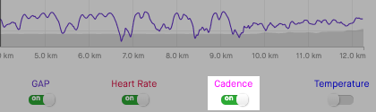

Options
Repeated segments
- Show aggregate segment data (fastest, slowest, average, etc) when segments are repeated within an activity.
-

Infinite scroll
- Automatically load more dashboard entries when reaching the bottom.
-

Leaderboard default
- Changes the default leaderboard to (eg. "My Results") instead of "Overall" when viewing a segment effort.
-

External links
- Show links to Veloviewer & Race Shape etc. on segment detail page.
-

Hide "find friends"
- Hide social networking buttons, including invitations to invite/find friends to Strava and sharing links.
-

"Enter" posts comment
- Immediately posts comment when pressing the "enter" / "return" key in the edit box rather than adding a new line.
-

Compare running
- Changes the default sport for the "Side by Side comparison" module to running.
-

Running cadence
- Show running cadence by default in elevation profile.
- 
Running heart rate
- Show running heart rate by default in elevation profile.
-

Variability Index
- Calculate a Variability Index (VI) from the weighted average power and the average power, an indication of how 'smooth' a ride was. A VI of 1.0 would mean perfect pacing.
-

Estimated FTP
- Select "Show Estimated FTP" by default on Power Curve.
-

Running TSS
- Estimates a run's Training Stress Score from its Grade Adjusted Pace distribution.
-

Standard Google map
- Prefer the "Standard" Google map over the "Terrain" view. (experimental)
-